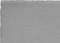

Beaubien-Perrault-Benington - Family Card
Beaubien-Perrault-Benington - Family Card
Pierre Thomas Tarieu De La Pérade(11 Sep 1677 - 25 Jan 1757)Charles Lemoyne De Longueuil 2ème baron de Longueuil(20 Oct 1687 - 19 Jan 1755)
M. Madeleine Jarret De Verchères(3 Feb 1678 - 8 Aug 1747)Catherine Charlotte Le Gouès(14 Nov 1697 - 12 Sep 1745)
m. 12 Jan 1764, Montréal, Québec

b. 4 Nov 1710, La Pérade, Québec
d. 1 Feb 1776, Hôpital Général de Québec, Québec, Québec
br. 2 Feb 1776, Hôpital Général de Québec, Québec, Québec
occ. officier, seigneur
edu.
rel.
Flags. Beaubien, Chevalier de St-Louis
b. 25 Nov 1734, Montréal, Québec
d. 16 Apr 1788, Québec, Québec
br.
occ.
edu.
rel.
Flags. Beaubien
Children
M. Anne Tarieu De Lanaudière(3 Apr 1765 - 27 Jan 1844)
Agathe Tarieu De Lanaudière(7 Apr 1766 - 7 Apr 1766)
> Catherine Tarieu De Lanaudière(17 Feb 1767 - 13 Apr 1842)
M. Louise Tarieu De Lanaudière(4 Mar 1768 - 4 Apr 1842)
Charles Gaspard Tarieu De Lanaudière(9 Sep 1769 - 7 Jun 1812)
Xavier Roch Tarieu De Lanaudière(20 Apr 1771 - 5 Feb 1813)
Antoine Ovide Tarieu De Lanaudière(12 Jul 1772 - 16 Dec 1838)
Pierre Charles Tarieu De Lanaudière(10 Jul 1773 - 10 Jul 1773)
Agathe Tarieu De Lanaudière(15 Apr 1774 - 24 Feb 1838)
Charlotte Marguerite Tarieu De Lanaudière(16 Sep 1775 - 17 Nov 1856)